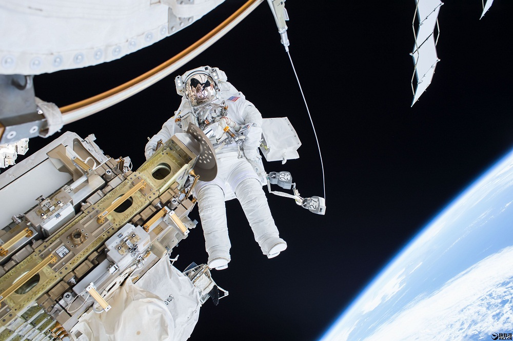

“玉兔号”月球车，重达140公斤，呈长方形盒状，肩部有两片可以打开的太阳能电池帆板；腿部是六个轮状的移动装置；此外，其还有一个长长的“耳朵”——地月对话通讯天线；4只敏锐的“眼睛”——头顶的导航相机与前后方的避障相机，遇到超过20度的斜坡、高于20厘米的石块或直径大于2米的撞击坑，能够自主判断安全避让；还有一只灵巧的“胳膊”——负责钻孔、研磨和采样的机械臂 
△太空漫步
虽然“玉兔”带有太阳能电池板，但由于在月夜中月球是照不到太阳的，太阳能电池板不能工作，这时候月夜的气温会下降到-100多度，连金属都会冻裂，所以月夜生存就成了另一个难题。“玉兔”携带了核燃料电池，在月夜的时候核电池保证了月球车的正常生存。这也是在中国第一次把核电池送上太空。
在这次“嫦娥三号”的月球车研制中，履带式设计早早出局。在此前的月球车范例中，它也鲜有出现。主要原因有二：
- 月球上像沙子样的月壤颗粒对履带磨损非常厉害；
- 履带不如轮子技术成熟。
另外，球形“月球车”在操控上不能精确定位转向，控制位置难度更大，也被排除。
月球车可分为无人驾驶月球车和有人驾驶月球车。1970年11月10日，前苏联成功发射月球17号，其搭载的月球车1号成为世界上第一辆成功运行的遥控月球车，它行驶了10.5公里，考察了8万平方米的月面。随后前苏联又研制了月球车2号，球车2号总共工作了4个月，拍摄了86张全景照片和80000张照片，但最后由于被掀起的月壤遮住了太阳能电池板而“寿终正寝”。
在有人驾驶月球车方面美国无疑是最大的赢家。他们在1971年7月31日由“阿波罗15”号宇航员戴维斯-R-斯科特和詹姆斯-B-欧文进行了人类首次有人驾驶的月球车行驶，他们驾驶着4轮月球车，在月球表面上行驶了数公里。
在“玉兔号”月球车之前，只有美国和前苏联的五辆月球车登陆月球。作为第六个登月的月球车，玉兔“秀气”不少。就个头来说，美苏的月球车都是大家伙，前苏联的月球车1号长2.2米，宽1.6米，高1米35，约重700公斤；而“玉兔”长1.5米，宽1米，高1.1米，重量仅仅是140公斤左右。相比于美国的有人驾驶月球车，“玉兔号”的个头更要小得多。